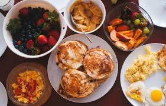
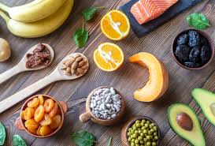
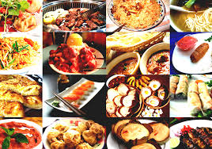
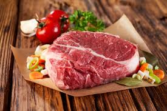
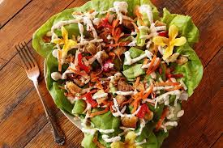
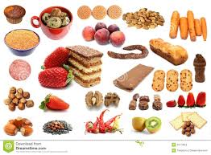
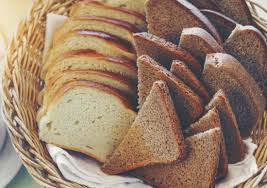

shushi cafe
Best restaurant
P.O.Box 21-20006
MASSECHUSSETT
contact us at sushicafe78@gmail.com
|
|
sushi cafe we are not just a place where you can visit and have
just any ordinary dishes, we offer the best
dishes in town and serve them to our customers precision.
we welcome all warmly and offer all our
customers a variety of cuisines
from our professional chefs.
They are the best in town as they are
specifically selected from the best
chefs in the country.
we prepare the meal as per your
precision and detail. The meals we offer are
prepared from natural plants with no
chemicals or preservatives so
you can be assured of your family and your
health is our first priority.
Apart from that we have a place where our guest can rest as they await to
served at the barbershop or salon or any other of the services we
offer.
SOME OF THE CUISINES WE OFFER





Back to the top
|